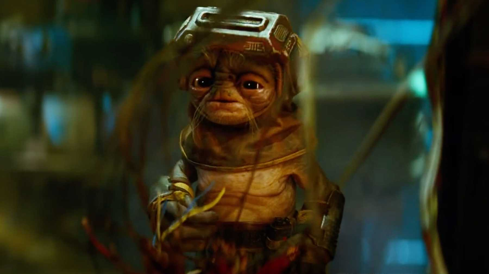

About Babu Frik
Babu Frik is a tiny and efficient alien, capable of modifying nearly any droid.
Babu Frik at work
Babu Frik's Characteristics
- He can reprogram or modify almost any droid, regardless of its security measures
- He speaks a heavily accented form of Basic known as Anzellan
- He can bypass C-3PO's programming restrictions
Babu's Friends
Babu Frik is one of C-3PO's oldest friends. Click on the links below to read more about him and who else he met while fixing the robot: